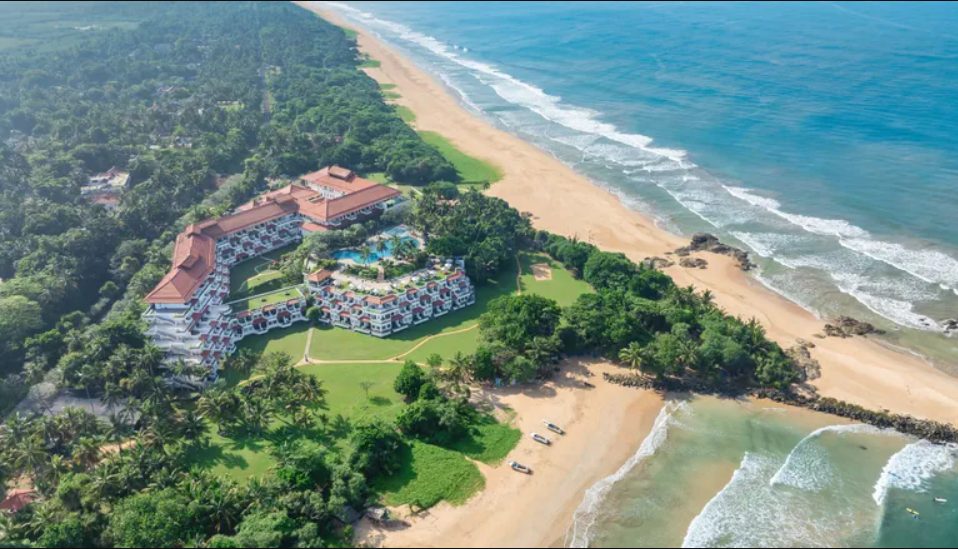

Sri Lanka is a beautiful island nation in South Asia, located in the Indian Ocean. It is known for its rich history, diverse culture, and natural beauty, including golden beaches, lush tea plantations, ancient temples, and wildlife-rich national parks. Sri Lanka has a long heritage influenced by Buddhism, Hinduism, Islam, and Christianity, which is reflected in its festivals, architecture, and daily life. The country is also famous for Ceylon tea, spices, gemstones, and warm hospitality, making it a unique and attractive destination for travelers and learners alike.
Here are some of the most beautiful places in Sri Lanka, known for nature, history, and scenic views 🌴🇱🇰
- Ella
- Sigiriya
- Nuwara Eliya
- Mirissa
- Kandy
- Horton Plains National Park
- Galle Fort
- Yala National Park
- Bentota
- Adam's Peek (Sripada)
A peaceful hill town with lush green mountains, waterfalls, tea plantations, and famous spots like Ella Rock and Nine Arches Bridge.

An ancient rock fortress rising from the jungle, famous for its stunning views, frescoes, and historical importance.

Called “Little England”, it is known for cool weather, misty hills, tea gardens, and beautiful lakes.

A stunning beach destination with golden sands, turquoise water, sunsets, and whale watching.

A cultural city surrounded by hills, home to the sacred Temple of the Tooth Relic and a beautiful lake.

Famous for World’s End, a dramatic cliff with breathtaking views, and rich biodiversity.

A historic coastal fort with colonial architecture, charming streets, cafes, and ocean views.

Known for wildlife safaris, especially leopards, elephants, and exotic birds.

A calm beach town perfect for relaxing, water sports, and river safaris.
A sacred mountain with a famous footprint and a magical sunrise view after the climb.

Here are the best and most beautiful beaches in Sri Lanka 🌊🇱🇰
- Mirissa
- Unawatuna
- Bentota
- Arugam Bay
- Hikkaduwa
- Nilaveli
- Pasikudah
- Tangalle
- Uppuveli
- Kalpitiya
Famous for golden sand, blue water, whale watching, and beautiful sunsets.
A popular beach near Galle with calm waters, palm trees, and great for swimming.
Perfect for relaxing, luxury resorts, and water sports like jet skiing and river safaris.
One of the best surfing beaches in Asia, with a laid-back vibe.
Known for coral reefs, snorkeling, diving, and lively beach life.
A peaceful beach near Trincomalee with clear water and white sand, ideal for relaxation.
Famous for shallow, calm water—great for swimming and families.
A quiet and scenic beach with long stretches of sand and fewer crowds.
A beautiful beach with crystal-clear water and a relaxed atmosphere.
Known for kite surfing, dolphins, and untouched natural beauty.